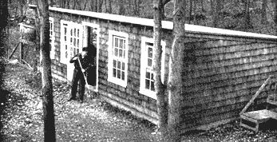

Our small all-purpose barn is 16 x 30 feet. Run at capacity this efficient little building houses up to 30 laying hens and a battery broiler in one section; in the other, 4 milk goats and in two pens up to 6 kids or lambs, plus a six compartment metal rabbit hutch, squab loft, milking stand, also feed and hay. No-draft ventilation with plenty of sunlight is provided by four windows facing south. A second door at the far end (not visible) opens from the goat dairy section into the fenced pasture. Small hen door on the north side lets hens out into the yard. Floor is concrete, building is regular frame and sheathing construction with cedar shingles roof of heavy green mineral surface roofing. Water is piped from the house. Cost including equipment: materials $285, labor $240.